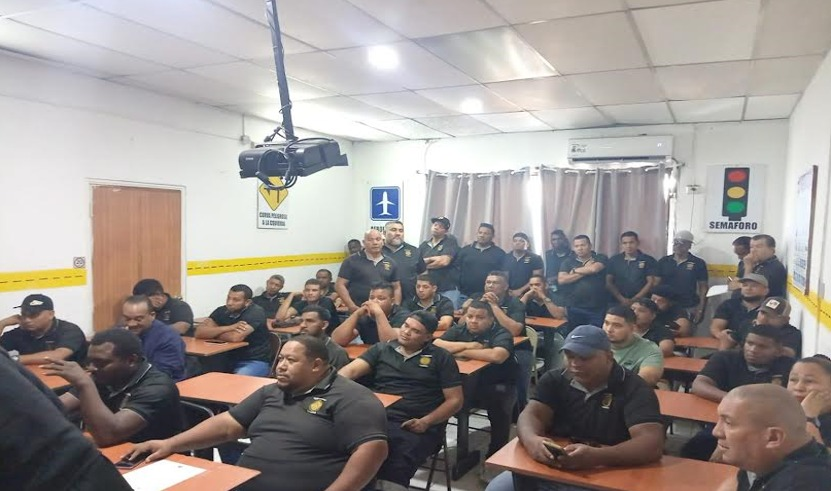

INFORMACIÓN DE TAXI URRACA
La concesionaria TAXIS URRACA, S.A., con ubicación de sus oficinas administrativas en el CENTRO COMERCIAL LOS PUEBLOS 2000, A LADO DEL ANTIGUO CINEMARK, LOCAL No.2, debidamente reconocida mediante ley 14 de 26 de mayo de 1993, y sus distintas modificaciones, nuestra empresa, esta reconocida con número de FOLIO No.274582 y sociedad anónima constituida según las normas de la República de Panamá e inscrita con número de RUC-39197-177274582, de la Sección de Micropelículas Mercantil del Registró Publico, a través de su representante legal, el LICDO. OMAR ABDIEL LÓPEZ, con cedula de identidad personal No. 8-177-774, en ese mismo sentido establecer que mantiene reconocimiento de prestataria del servicio de transporte público selectivo, mediante RESOLUCION No. 68 R/P del 26 de octubre de 2000, para su operatividad en toda la provincia de Panama.
OBJETIVO GENERALES
El propósito fundamental de nuestra empresa es brindar un servicio eficiente de transporte publico selectivo en la provincia de Panama, respetando las normas y principios generales de operación y disciplina en la prestación del servicio establecido. A fin de mantener un servicio de transporte de pasajeros de forma adecuada, confortable, eficiente, seguro y eficaz, acorde con la reglamentación del transporte vigente de la República de Panamá y respetando las exigencias de los usuarios y la A.T.T.T.
OBJETIVO ESPECIFICOS
- Prestar el servicio de transporte Selectivo de pasajeros y poder llevar a cualquier persona hacia su destino en forma segura, oportuna y confiable con un óptimo desempeño operacional.
- Mejorar la calidad de vida a los miles de panameños que desean accesar a un vehículo de transporte selectivo de pasajeros, así como también la formación y capacitación de nuestros conductores en nuestros institutos de formaciones que mantenemos operando como nuestras escuelas de manejo.
- Ofrecer un buen servicio al usuario que redunde en su beneficio, mejor cooperación y satisfacción general de los mismos.
- Colaborar con la administración de la Autoridad de Transito y Transporte Terrestre, cumpliendo con las disposiciones del Transporte Terrestre de pasajeros y contribuir en el mejoramiento del servicio en la provincia de panama.
- Cobrar una tarifa de precios teniendo en cuenta las disposiciones establecidas por el ente regulador y fiscalizador (A.T.T.T.)
- Formar el sentido de disciplina, responsabilidad y colaboración en los conductores transporte público de pasajeros en su modalidad selectivo y de plataformas que operan en nuestros puntos de piqueras, como también en el desarrollo de la empresa, para operar como transporte del primer mundo utilizando herramientas tecnológicas para una mejor la conectividad y supervisión del servicio.
